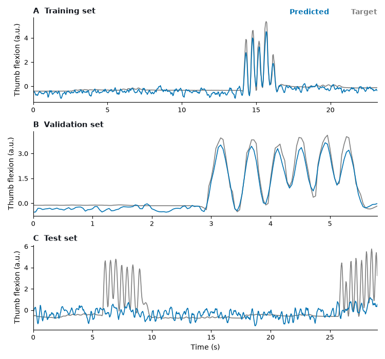
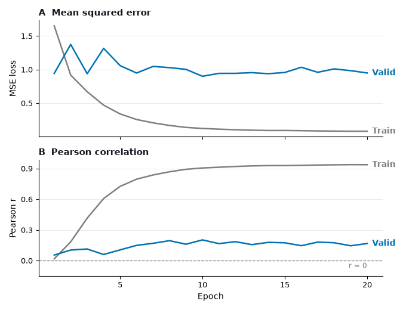

Note
Go to the end to download the full example code.
Fingers flexion decoding on BCIC IV 4 ECoG Dataset#
This tutorial shows you how to train and test deep learning models with Braindecode on ECoG BCI IV competition dataset 4. For this dataset we will predict 5 regression targets corresponding to flexion of each finger. The targets were recorded as a time series (each 25 Hz), so this tutorial is an example of time series target prediction.
# Authors: Maciej Sliwowski <maciek.sliwowski@gmail.com>
# Mohammed Fattouh <mo.fattouh@gmail.com>
#
# License: BSD (3-clause)
Loading and preparing the dataset#
Loading#
First, we load the data. In this tutorial, we use the functionality of braindecode to load BCI IV competition dataset 4. The dataset is available as a part of ECoG library: https://searchworks.stanford.edu/view/zk881ps0522
The dataset contains ECoG signal and time series of 5 targets corresponding to each finger flexion. This is different than standard decoding setup for EEG with multiple trials and usually one target per trial. Here, fingers flexions change in time and are recorded with sampling frequency equals to 25 Hz.
If this dataset is used please cite [1].
[1] Miller, Kai J. “A library of human electrocorticographic data and analyses. “Nature human behaviour 3, no. 11 (2019): 1225-1235. https://doi.org/10.1038/s41562-019-0678-3
import numpy as np
from braindecode.datasets import BCICompetitionIVDataset4
subject_id = 1
dataset = BCICompetitionIVDataset4(subject_ids=[subject_id])
Creating RawArray with float64 data, n_channels=67, n_times=400000
Range : 0 ... 399999 = 0.000 ... 399.999 secs
Ready.
Creating RawArray with float64 data, n_channels=67, n_times=200000
Range : 0 ... 199999 = 0.000 ... 199.999 secs
Ready.
Preprocessing#
Now we apply preprocessing like bandpass filtering to our dataset. You
can either apply functions provided by
mne.io.Raw or mne.Epochs
or apply your own functions, either to the MNE object or the underlying
numpy array.
Note
Preprocessing steps are taken from a standard EEG processing pipeline. The only change is the cutoff frequency of the filter. For a proper ECoG decoding other preprocessing steps may be needed.
Note
These prepocessings are now directly applied to the loaded data, and not on-the-fly applied as transformations in PyTorch-libraries like torchvision.
from braindecode.preprocessing import (
Preprocessor,
exponential_moving_standardize,
preprocess,
)
low_cut_hz = 1.0 # low cut frequency for filtering
high_cut_hz = 200.0 # high cut frequency for filtering, for ECoG higher than for EEG
# Parameters for exponential moving standardization
factor_new = 1e-3
init_block_size = 1000
preprocess(dataset, [Preprocessor("crop", tmin=0, tmax=30)])
/home/runner/work/braindecode/braindecode/braindecode/preprocessing/preprocess.py:82: UserWarning: apply_on_array can only be True if fn is a callable function. Automatically correcting to apply_on_array=False.
warn(
In time series targets setup, targets variables are stored in mne.Raw object as channels of type misc. Thus those channels have to be selected for further processing. However, many mne functions ignore misc channels and perform operations only on data channels (see MNE’s glossary on data channels).
preprocessors = [
Preprocessor("pick_types", ecog=True, misc=True),
Preprocessor(lambda x: x / 1e6, picks="ecog"), # Convert from V to uV
Preprocessor("filter", l_freq=low_cut_hz, h_freq=high_cut_hz), # Bandpass filter
Preprocessor(
exponential_moving_standardize, # Exponential moving standardization
factor_new=factor_new,
init_block_size=init_block_size,
picks="ecog",
),
]
# Transform the data
preprocess(dataset, preprocessors)
# Extract sampling frequency, check that they are same in all datasets
sfreq = dataset.datasets[0].raw.info["sfreq"]
assert all([ds.raw.info["sfreq"] == sfreq for ds in dataset.datasets])
# Extract target sampling frequency
target_sfreq = dataset.datasets[0].raw.info["temp"]["target_sfreq"]
/home/runner/work/braindecode/braindecode/braindecode/preprocessing/preprocess.py:82: UserWarning: apply_on_array can only be True if fn is a callable function. Automatically correcting to apply_on_array=False.
warn(
/home/runner/work/braindecode/braindecode/braindecode/preprocessing/preprocess.py:80: UserWarning: Preprocessing choices with lambda functions cannot be saved.
warn("Preprocessing choices with lambda functions cannot be saved.")
NOTE: pick_types() is a legacy function. New code should use inst.pick(...).
Filtering raw data in 1 contiguous segment
Setting up band-pass filter from 1 - 2e+02 Hz
FIR filter parameters
---------------------
Designing a one-pass, zero-phase, non-causal bandpass filter:
- Windowed time-domain design (firwin) method
- Hamming window with 0.0194 passband ripple and 53 dB stopband attenuation
- Lower passband edge: 1.00
- Lower transition bandwidth: 1.00 Hz (-6 dB cutoff frequency: 0.50 Hz)
- Upper passband edge: 200.00 Hz
- Upper transition bandwidth: 50.00 Hz (-6 dB cutoff frequency: 225.00 Hz)
- Filter length: 3301 samples (3.301 s)
NOTE: pick_types() is a legacy function. New code should use inst.pick(...).
Filtering raw data in 1 contiguous segment
Setting up band-pass filter from 1 - 2e+02 Hz
FIR filter parameters
---------------------
Designing a one-pass, zero-phase, non-causal bandpass filter:
- Windowed time-domain design (firwin) method
- Hamming window with 0.0194 passband ripple and 53 dB stopband attenuation
- Lower passband edge: 1.00
- Lower transition bandwidth: 1.00 Hz (-6 dB cutoff frequency: 0.50 Hz)
- Upper passband edge: 200.00 Hz
- Upper transition bandwidth: 50.00 Hz (-6 dB cutoff frequency: 225.00 Hz)
- Filter length: 3301 samples (3.301 s)
Cut Compute Windows#
Now we cut out compute windows, the inputs for the deep networks during training. In the case of trialwise decoding of time series targets, we just have to decide about length windows that will be selected from the signal preceding each target. We use different windowing function than in standard trialwise decoding as our targets are stored as target channels in mne.Raw.
from braindecode.preprocessing import create_windows_from_target_channels
windows_dataset = create_windows_from_target_channels(
dataset, window_size_samples=1000, preload=False, last_target_only=True
)
We select only the thumb’s finger flexion to create one model per finger.
Note
Methods to predict all 5 fingers flexion with the same model may be cnosidered as well. We encourage you to find your own way to use braindecode models to predict finers fexions.
windows_dataset.target_transform = lambda x: x[0:1]
Split dataset into train, valid, and test#
We can easily split the dataset using additional info stored in the
description attribute, in this case session column. We select train dataset
for training and validation and test for final evaluation.
We can split train dataset into training and validation datasets using
sklearn.model_selection.train_test_split() and torch.utils.data.Subset.
import torch
from sklearn.model_selection import train_test_split
idx_train, idx_valid = train_test_split(
np.arange(len(train_set)), random_state=100, test_size=0.2, shuffle=False
)
valid_set = torch.utils.data.Subset(train_set, idx_valid)
train_set = torch.utils.data.Subset(train_set, idx_train)
Create model#
Now we create the deep learning model! Braindecode comes with some
predefined convolutional neural network architectures for raw
time-domain EEG. Here, we use the shallow ConvNet model from Deep
learning with convolutional neural networks for EEG decoding and
visualization. These models are
pure PyTorch deep learning models, therefore
to use your own model, it just has to be a normal PyTorch
torch.nn.Module.
from braindecode.models import ShallowFBCSPNet
from braindecode.util import set_random_seeds
cuda = torch.cuda.is_available() # check if GPU is available, if True chooses to use it
device = "cuda" if cuda else "cpu"
if cuda:
torch.backends.cudnn.benchmark = True
# Set random seed to be able to roughly reproduce results
# Note that with cudnn benchmark set to True, GPU indeterminism
# may still make results substantially different between runs.
# To obtain more consistent results at the cost of increased computation time,
# you can set `cudnn_benchmark=False` in `set_random_seeds`
# or remove `torch.backends.cudnn.benchmark = True`
seed = 20200220
set_random_seeds(seed=seed, cuda=cuda)
n_out_chans = train_set[0][1].shape[0]
# Extract number of chans and time steps from dataset
n_chans = train_set[0][0].shape[0]
n_times = 1000 # 1 second long windows
model = ShallowFBCSPNet(
n_chans,
n_out_chans,
n_times=n_times,
final_conv_length="auto",
)
# Send model to GPU
if cuda:
model.cuda()
Training#
Now we train the network! braindecode.regressor.EEGRegressor
is a Braindecode object responsible for managing the training of neural networks.
It inherits from skorch.regressor.NeuralNetRegressor, so the training
logic is the same as in skorch.
Note
In this tutorial, we use some default parameters that we have found to work well for EEG motor decoding, however we strongly encourage you to perform your own hyperparameter and preprocessing optimization using cross validation on your training data.
from mne import set_log_level
from skorch.callbacks import EarlyStopping, EpochScoring, LRScheduler
from skorch.helper import predefined_split
from braindecode import EEGRegressor
# These values we found good for shallow network for EEG MI decoding:
lr = 0.0625 * 0.01
weight_decay = 0
batch_size = 64
n_epochs = 4
# Function to compute Pearson correlation coefficient
def pearson_r_score(net, dataset, y):
preds = net.predict(dataset)
corr_coeffs = []
for i in range(y.shape[1]):
corr_coeffs.append(np.corrcoef(y[:, i], preds[:, i])[0, 1])
return np.mean(corr_coeffs)
regressor = EEGRegressor(
model,
criterion=torch.nn.MSELoss,
optimizer=torch.optim.AdamW,
train_split=predefined_split(valid_set), # using valid_set for validation,
optimizer__lr=lr,
optimizer__weight_decay=weight_decay,
batch_size=batch_size,
callbacks=[
"r2",
(
"valid_pearson_r",
EpochScoring(
pearson_r_score,
lower_is_better=False,
on_train=False,
name="valid_pearson_r",
),
),
(
"train_pearson_r",
EpochScoring(
pearson_r_score,
lower_is_better=False,
on_train=True,
name="train_pearson_r",
),
),
("lr_scheduler", LRScheduler("CosineAnnealingLR", T_max=max(1, n_epochs - 1))),
("early_stopping", EarlyStopping(patience=10, load_best=True)),
],
device=device,
)
set_log_level(verbose="WARNING")
Model training for a specified number of epochs. y is None as it is already supplied
in the dataset.
regressor.fit(train_set, y=None, epochs=n_epochs)
epoch train_loss train_pearson_r train_r2 valid_loss valid_pearson_r valid_r2 lr dur
------- ------------ ----------------- ---------- ------------ ----------------- ---------- ------ -------
1 2.6673 0.1233 -0.9416 6.3345 -0.2343 -1.8972 0.0006 16.1271
2 1.6794 0.3597 0.1544 3.7354 -0.2513 -0.7085 0.0005 16.7694
3 1.5066 0.3982 0.3399 3.7623 -0.2450 -0.7208 0.0002 16.1363
4 1.2020 0.4536 0.3766 3.8679 -0.2469 -0.7691 0.0000 16.8277
Restoring best model from epoch 2.
Training for longer#
The gallery build above uses only n_epochs = 4. When trained
offline on the full recording for up to 100 epochs with early stopping,
the model reaches a test-set mean Pearson r of 0.18.
We can load the pretrained checkpoint from the Hugging Face Hub and inspect the full training curves:
import warnings
repo_id = "braindecode/bcic_iv_4_ecog_trial"
try:
from huggingface_hub import hf_hub_download
regressor.initialize()
regressor.load_params(
f_params=hf_hub_download(repo_id, "params.safetensors"),
f_history=hf_hub_download(repo_id, "history.json"),
use_safetensors=True,
)
except Exception as exc:
warnings.warn(
f"Could not load pretrained checkpoint from {repo_id} ({exc}); "
"continuing with the locally trained short-run model.",
stacklevel=2,
)
Re-initializing module.
Re-initializing criterion.
Re-initializing optimizer.
Obtaining predictions and targets for the test, train, and validation dataset
preds_test = regressor.predict(test_set)
y_test = np.stack([data[1] for data in test_set])
preds_train = regressor.predict(train_set)
y_train = np.stack([data[1] for data in train_set])
preds_valid = regressor.predict(valid_set)
y_valid = np.stack([data[1] for data in valid_set])
Plot Results#
We plot the target (grey) and predicted (blue) thumb flexion on the training (A), validation (B), and test (C) sets.
import matplotlib.pyplot as plt
import pandas as pd
from matplotlib.ticker import MaxNLocator
BLUE, GREY, INK = "#0072B2", "#7F7F7F", "#14181F"
# MOABB, imported by ``braindecode.datasets``, sets a seaborn style when it is
# imported, so we go back to the matplotlib defaults before our own settings.
plt.rcdefaults()
plt.rcParams.update(
{
"figure.facecolor": "white",
"axes.facecolor": "white",
"font.family": "sans-serif",
"font.size": 10,
"axes.labelsize": 10,
"axes.titlesize": 10.5,
"xtick.labelsize": 9,
"ytick.labelsize": 9,
"axes.linewidth": 0.8,
"axes.spines.top": False,
"axes.spines.right": False,
"xtick.direction": "out",
"ytick.direction": "out",
}
)
fig, axes = plt.subplots(3, 1, figsize=(7.5, 7))
for ax, (letter, name, y, preds) in zip(
axes,
[
("A", "Training set", y_train, preds_train),
("B", "Validation set", y_valid, preds_valid),
("C", "Test set", y_test, preds_test),
],
):
times = np.arange(y.shape[0]) / target_sfreq
ax.plot(times, y[:, 0], color=GREY, linewidth=1.2)
ax.plot(times, preds[:, 0], color=BLUE, linewidth=1.2)
ax.set_xlim(times[0], times[-1])
ax.set_ylabel("Thumb flexion (a.u.)")
ax.yaxis.set_major_locator(MaxNLocator(nbins=4))
ax.set_title(f"{letter} {name}", loc="left", fontweight="bold", color=INK)
axes[0].text(
1.0,
1.02,
"Target",
color=GREY,
fontweight="bold",
transform=axes[0].transAxes,
ha="right",
va="bottom",
)
axes[0].text(
0.86,
1.02,
"Predicted",
color=BLUE,
fontweight="bold",
transform=axes[0].transAxes,
ha="right",
va="bottom",
)
axes[-1].set_xlabel("Time (s)")
fig.tight_layout()
plt.show()

We can compute correlation coefficients for each finger
corr_coeffs = []
for dim in range(y_test.shape[1]):
corr_coeffs.append(np.corrcoef(preds_test[:, dim], y_test[:, dim])[0, 1])
print("Correlation coefficient for each dimension: ", np.round(corr_coeffs, 2))
Correlation coefficient for each dimension: [0.41]
Now we use the history stored by Skorch throughout training to plot the mean squared error loss (A) and the Pearson correlation between target and prediction (B) on the training (grey) and validation (blue) sets. A correlation of 0 means no linear relation, drawn as the dashed line.
results_columns = ["train_loss", "valid_loss", "train_pearson_r", "valid_pearson_r"]
df = pd.DataFrame(
regressor.history[:, results_columns],
columns=results_columns,
index=regressor.history[:, "epoch"],
)
fig, (ax_loss, ax_r) = plt.subplots(2, 1, figsize=(6.8, 5.2), sharex=True)
for ax, metric in ((ax_loss, "loss"), (ax_r, "pearson_r")):
for split, name, color in (("train", "Train", GREY), ("valid", "Valid", BLUE)):
values = df[f"{split}_{metric}"]
ax.plot(df.index, values, color=color, linewidth=1.8)
ax.annotate(
name,
xy=(df.index[-1], values.iloc[-1]),
xytext=(6, 0),
textcoords="offset points",
color=color,
fontweight="bold",
va="center",
)
ax.grid(axis="y", color="#EAEAEA", linewidth=0.7)
ax.set_axisbelow(True)
ax.yaxis.set_major_locator(MaxNLocator(nbins=4))
ax_r.axhline(0, color=GREY, linestyle="--", linewidth=0.9)
ax_r.text(df.index[-1], -0.02, "r = 0", color=GREY, fontsize=8.5, ha="right", va="top")
ax_r.set_ylim(bottom=min(-0.15, ax_r.get_ylim()[0]))
ax_loss.set_ylabel("MSE loss")
ax_r.set_ylabel("Pearson r")
ax_r.set_xlabel("Epoch")
ax_r.xaxis.set_major_locator(MaxNLocator(nbins=5, integer=True))
ax_loss.set_title("A Mean squared error", loc="left", fontweight="bold", color=INK)
ax_r.set_title("B Pearson correlation", loc="left", fontweight="bold", color=INK)
fig.tight_layout()
plt.show()

Total running time of the script: (1 minutes 34.989 seconds)
Run this example